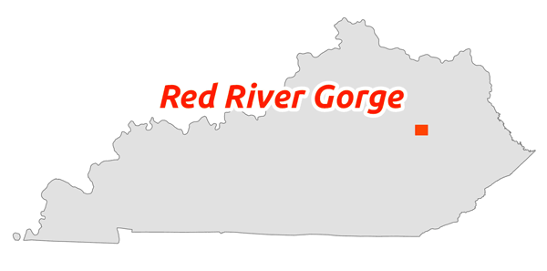

Red River Gorge Welcome Center
WELCOME
 The Red River Gorge awaits, my fellow trail wanderer! Find impressive cliffs and sweet overlooks in the heart of Kentucky. Visit the Gladie Visitor Center to start your adventure!
Grays Arch, a special place to visit
 Visit Grays Arch, a sandstone arch over 80 feet in height. The arch is managed by the Cumberland Ranger District in the Daniel Boone National Forest. The project is part of the GEO 409 coursework in the Department of Geography at the University of Kentucky. The course used ArcGIS Pro and Python scripting to process and analyze spatial data.
Visit Grays Arch, a sandstone arch over 80 feet in height. The arch is managed by the Cumberland Ranger District in the Daniel Boone National Forest. The project is part of the GEO 409 coursework in the Department of Geography at the University of Kentucky. The course used ArcGIS Pro and Python scripting to process and analyze spatial data.

A 360 Photograph of Grays Arch (photograph by UK Geography)
Geospatial PDF of Arches
Download and use this map on your mobile device
A scenic destination

Plenty in the Red River Gorge! Visit Don Juan's Garden (photograph by UK Geography)
More information
- UKy Geography Department
- Geography Department’s GIS and mapping page
- Interactive map of US Forest Service recreation areas.